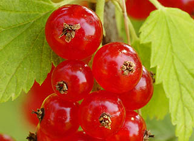

Ceres
Velmi plodná odrůda s velkými černými bobulemi a polní rezistencí vůči vlnovníku rybízovému.
Detail odrůdy ↗Pestrý sortiment od velmi raných po pozdní odrůdy. Vyberte si podle barvy, chuti, termínu sklizně i zamýšleného využití.

Osm odrůd od velmi raného Démonu po středně pozdní Lotu a Titanii. Některé vynikají odolností vůči chorobám nebo jarním mrazíkům.
Velmi plodná odrůda s velkými černými bobulemi a polní rezistencí vůči vlnovníku rybízovému.
Detail odrůdy ↗Nejranější odrůda v sortimentu stanice. Pevné bobule mají sladkokyselou a výrazně aromatickou chuť.
Detail odrůdy ↗Velké až velmi velké aromatické bobule velmi dobré chuti. Dozrává krátce po Démonu.
Detail odrůdy ↗Středně pozdní odrůda s pevnými lesklými bobulemi v delším hroznu. Brzy a pravidelně plodí a má dobrý zdravotní stav.
Detail odrůdy ↗Aromatické bobule velmi dobré chuti. Odrůda dobře odolává jarním mrazíkům a snáší i méně příznivé podmínky.
Detail odrůdy ↗Větší bobule dozrávají stejnoměrně. Nižší keř netrpí hnědým padlím a hodí se do všech pěstebních poloh.
Detail odrůdy ↗Úrodná, bujněji rostoucí odrůda s aromatickými plody bohatými na vitamin C a vysokou odolností vůči chorobám.
Detail odrůdy ↗Středně vzrůstná odrůda s většími bobulemi na delší stopce.
Detail odrůdy ↗Třináct odrůd pokrývá širokou sezonu. Liší se délkou hroznů, velikostí bobulí, chutí i vhodností do sušších či vlhčích poloh.
Sytě červené bobule na dlouhých hroznech. Vzrůstná odrůda se hodí i do sušších oblastí.
Detail odrůdy ↗Vzrůstná odrůda s dlouhými hrozny a velkými bobulemi; podle stanice vhodná i do sušších oblastí.
Detail odrůdy ↗Dlouhé hrozny s pevnými, tmavě červenými bobulemi sladké aromatické chuti. Hodí se k jídlu, zpracování i mražení.
Detail odrůdy ↗Dozrává už na přelomu června a července. Nese větší sytě červené bobule ve středně dlouhých hroznech.
Detail odrůdy ↗Větší tmavě červené bobule, brzká a pravidelná plodnost a vysoké výnosy. Hodí se hlavně na šťávy.
Detail odrůdy ↗Hrozny mohou být až 22 cm dlouhé. Velké světle červené bobule mají navinule kyselou chuť.
Detail odrůdy ↗Dlouhé hrozny, velké jasně červené bobule, vysoký výnos a příjemná sladkokyselá chuť pro přímý konzum.
Detail odrůdy ↗Velké bobule se v plné zralosti barví tmavě červeně a mají kyselejší chuť. Hodí se do všech pěstebních oblastí.
Detail odrůdy ↗Osvědčená odrůda se středně dlouhými hrozny a většími pevnými bobulemi.
Detail odrůdy ↗Mohutný keř s delšími hrozny a sytě červenými bobulemi. Vyniká vysokou plodností a odolností k mrazu i houbovým chorobám.
Detail odrůdy ↗Velmi vzrůstná odrůda s dlouhými hrozny, vhodná také do sušších pěstebních oblastí.
Detail odrůdy ↗Velké tmavě červené bobule mají sladkokyselou až sladší chuť. Plodnost je pravidelná, bez výrazných výkyvů.
Detail odrůdy ↗Kompaktní menší keř s brzkou, pravidelnou plodností a vysokou výtěžností šťávy.
Detail odrůdy ↗Pět odrůd od raného Jantaru po středně pozdní Blanku. Nabídka zahrnuje výrazně sladší typy i odrůdy vhodné pro výrobu šťáv.
Bohatě plodící, vzrůstná odrůda s většími bobulemi, vhodná do všech pěstebních oblastí.
Detail odrůdy ↗Středně dlouhé až dlouhé hrozny a bobule s malým obsahem peciček. Lahodná sladce navinulá chuť vynikne při přímém konzumu.
Detail odrůdy ↗Dlouhé hrozny se zářivě žlutými bobulemi sladkokyselé chuti. Odrůda nabízí vysokou výtěžnost šťávy.
Detail odrůdy ↗Jasně žlutobílé bobule mají vynikající sladší chuť. Odrůda bohatě a pravidelně plodí, hodí se k jídlu i na šťávy.
Detail odrůdy ↗Vzrůstná odrůda s bohatou plodností a středně velkými až většími bobulemi pro všechny pěstitelské oblasti.
Detail odrůdy ↗Sortiment i dostupnost se mění během sezony. Informace o skladových zásobách vždy ověřte přímo u Šlechtitelské stanice Velké Losiny.